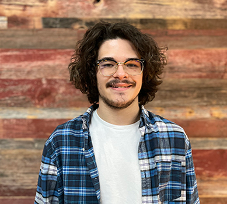
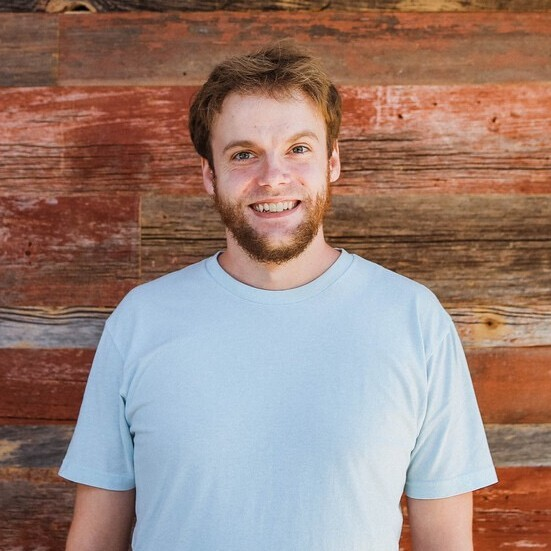
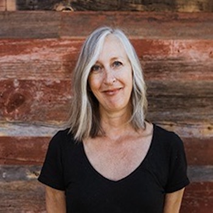

ABOUT US
Jack
Hello, my name is Jack and I'm a student at DeltaV Code School studying software development. I am making the career transition into software development because tech has always been a large part of my personal life, and I want a career that prioritizes learning and honing your skills. I have an extensive background working with both youth and adults in mental health services, which has given me strong conflict management skills, an adaptable communication style, and an empathetic perspective on the world. My coworkers and friends have frequently described me as someone who is always curious, constantly improving my skills, and an excellent listener. In conjunction with my lifelong love of tech I am looking to integrate my strengths and my growing knowledge of software development and apply them to my next workplace.
Mike
Hi, my name is Mike Pace. I was in customer service before switching to software development. I've always wanted to know how to code software so when I got the opportunity to learn at DeltaV Code School, I was excited to take it. I want to have a positive impact on tech culture as well as the rest of the world. I'm interested in developing software purposed for entertainment as well as software for practical uses. I'm certain my experience in customer service will help me create user-friendly front-end experiences and easy to read back-end code. I feel this will make me an invaluable member of any team that I work with and I hope you can utilize my skills for mutual benefit.
Susan
Susan Hargus is an aspiring software developer and a classical realist painter who is fascinated with the creative connection between tech and art. She and her husband moved from Los Angeles to a small college town in rural Iowa seeing an opportunity to balance the upbringing of their two young children. She has a BFA that includes studies at both the Minneapolis College of Art and Design and the University of Iowa. While in Minneapolis she honed her painting skills at an Atelier where she learned the centuries old classical realism method of painting. She has long held an interest in coding which includes an appreciation of the deep thinking problem solving skills that are also found in art where every stroke you make is a conscientious decision. She appreciates coding’s inherently creative qualities and its ever evolving nature, and loves that it provides the opportunity for continual discovery. She came to DeltaV seeking a new career that offers financial security in uncertain times. And she hopes that a career in the tech industry will give her an opportunity to affect positive progression in her community.